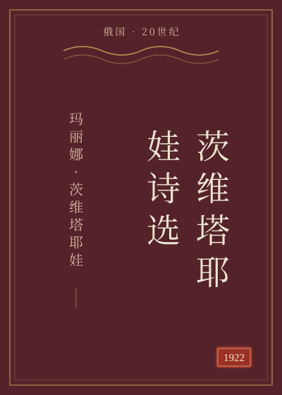
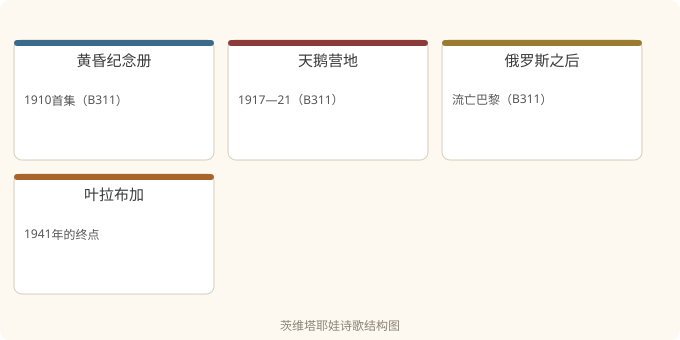

茨维塔耶娃诗选
一、基本信息
| 作者 | 玛丽娜·茨维塔耶娃 |
|---|---|
| 成书/出版 | 诗作于1910—1941年间；通行选本数十首 Selma Lagerlof — Encyclopaedia Britannica（百科全书） |
| 国别/地区 | 俄国 |
| 时代 | 现当代 · 20世纪 |
| 体裁 | 诗选集 |
| 语言 | 俄语 |

茨维塔耶娃诗歌结构图（主题·结构图）
二、创作背景
作者页（B311）：茨维塔耶娃'regarded as one of the finest Russian-language poets of the 20th century'（B311 作者页定位）；'distinctive for its staccato rhythms, originality, and directness'（B311）。
主要作品（B311）：Vecherny albom (1910)、Lebediny stan（1917—21写/1957出版）、Posle Rossii (1928)、Moy Pushkin (1937)、Stikhi k Chekhii (1938–39)。
'She committed suicide in 1941'（B311）。
三、内容脉络
《黄昏纪念册》(1910)、《神灯》(1912)、《从两本书》(1913)——早期三集（通说待核）。
《天鹅营地》(1917—21)、《俄罗斯之后》(1928)——流亡期（通说待核）。
《我的普希金》(1937)——散文（B311）。
四、主要人物表
| 人物 | 身份 | 说明 |
|---|---|---|
| 茨维塔耶娃 | 诗人 | 'staccato rhythms'（B311） |
五、主题与艺术特点
- 流亡与回归（B311 语境）。
- 爱情诗（致帕斯捷尔纳克/里尔克——通说待核）。
- 母性与女儿（通说待核）。
六、影响与评论
- Britannica：'one of the finest Russian-language poets of the 20th century'（B311）。
Selma Lagerlof — Encyclopaedia Britannica（百科全书） - 作者页：布罗茨基等后辈诗人的推崇（通说待核——B313 未载）。
Joseph Brodsky — Encyclopaedia Britannica（百科全书）
七、阅读建议
难点
- 断续节奏的朗读。
- 流亡三阶段（布拉格/巴黎）。
- 《茨维塔耶娃诗集》（人民文学出版社/广西师范大学出版社版本，通说待核）。
- 俄文原版。
先《黄昏纪念册》后流亡期。
八、待核实
- 《黄昏纪念册》1910年出版核对。
- 《致布洛克的诗》《致阿赫玛托娃》组诗待核。
- 1941年叶拉布加自杀细节（B311 已载）核对。
本页主要来源
玛丽娜·茨维塔耶娃的其他收录作品：茨维塔耶娃诗选